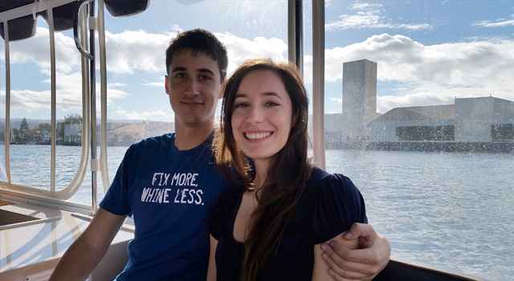

Testimone dello sposo e consulente di fiducia, che si tratti di leggi o di argomenti decisamente meno seri. È stato una presenza preziosa fin dall'inizio dell'organizzazione, sempre disponibile ad aiutare e pronto a farci ridere.
Siete invitati al nostro matrimonio!
Lunedì 4 luglio 2016
Alle ore 17:00
Presso il Castello di Monasterolo
Piazzetta Contessa Terni 1
24060 Monasterolo del Castello (BG)
Alice
Merli
Giorgio
Cavaggion
LA NOSTRA STORIA
Abbiamo deciso di sposarci e di andare a vivere, giusto giusto, a 9.595 km dall'Italia. Nel giorno del nostro matrimonio ci piacerebbe rivedervi, salutarvi e stare un po' con voi.
Durante la nostra storia, abbiamo dovuto affrontare qualche difficoltà; noi, però, siamo riusciti a sopportare la distanza, i fusi orari, le lunghe assenze e le brevi presenze, contando sempre l'uno sull'altro. Ci aspettano non poche sfide in un paese tanto lontano, ma abbiamo voglia di costruire la nostra famiglia, cominciando ufficialmente dal 4 luglio, festa dell'indipendenza americana.
Questo giorno rappresenta per noi un grande cambiamento, siamo quindi particolarmente emozionati. Il tema che incornicia l'intera giornata è, ovviamente, l'amore che supera ogni distanza. Questo è un argomento che ci sta a cuore poiché riguarda tanto la nostra storia come coppia, quanto il nostro futuro e i legami con le persone a cui vogliamo bene.
Vi aspettiamo per festeggiare con noi il nostro importante inizio.
2006
Primavera

Il primo incontro
2010
Primavera

Nottate a parlare
28 novembre

Inizia la nostra storia
2011
Primavera

La prima vacanza insieme
2012
autunno
Chicago
2014
Estate
Londra
Autunno

California
2015
1 gennaio

Fidanzamento
Luglio
Convivenza

Nella vita non ha importanza dove vai ma con chi viaggi
Consigli utili
Per strada
Usciti dall'autostrada, regolate la velocità sulle strade che portano al lago d'Endine: sono presenti alcuni autovelox.
Parcheggio
Appena arrivati alla piazzetta Contessa Terni, avendo davanti il cancello del castello, troverete un ampio parcheggio sulla destra.
Ricevimento
Se avete particolari intolleranze, preferenze o regimi alimentari specifici, vi preghiamo di segnalarcelo con almeno tre settimane d'anticipo, in maniera da modificare il menù in base alle vostre esigenze.
"Dress code"
Non esiste un “dress code” ma vi diamo questo utile consiglio: la sera, nel cortile del ricevimento, potrebbe fare freschino; vi suggeriamo di portare un golfino o qualcosa per coprirvi, nonostante sia estate.
I 'supporters'
Oltre alle nostre famiglie e ai nostri più cari amici, sempre presenti e pronti a sostenerci, in questo giorno speciale ci aiuteranno:
Save the date
Save the Date <3
Posted by Giorgio Cavaggion on Sabato 17 ottobre 2015
Contattaci
Alice
Numero di casa
02-36542004
Cellulare
333-7352333
Mamma Roberta
339-3368556
Giorgio
Numero di casa
02-5230205
Papà Maurizio
349-6664916
Giovanni
380-4291648
Vi chiediamo cortesemente di non chiamare/contattare gli sposi il giorno del matrimonio dal momento che saranno piuttosto impegnati. Rivolgetevi ai testimoni o ai genitori degli sposi. Potete anche contattare la nostra disponibilissima wedding planner Jo al numero 366-5052058.
Come aiutarci
Vivendo in America, abbiamo deciso di non fare la lista nozze e nemmeno un'impegnativa luna di miele: andare a vivere così lontano sarà già una bella avventura! Chi volesse aiutarci potrà contribuire, nel modo in cui gli è più congeniale; così, mattoncino dopo mattoncino, riusciremo a mettere le fondamenta della nostra futura casa, ovunque essa sarà.
Potete trovare specifiche indicazioni su come aiutarci cliccando qui sotto:
Conferma la tua partecipazione
Comunica la tua presenza agli sposi entro fine maggio 2016
tramite telefono, Facebook o WhatsApp.